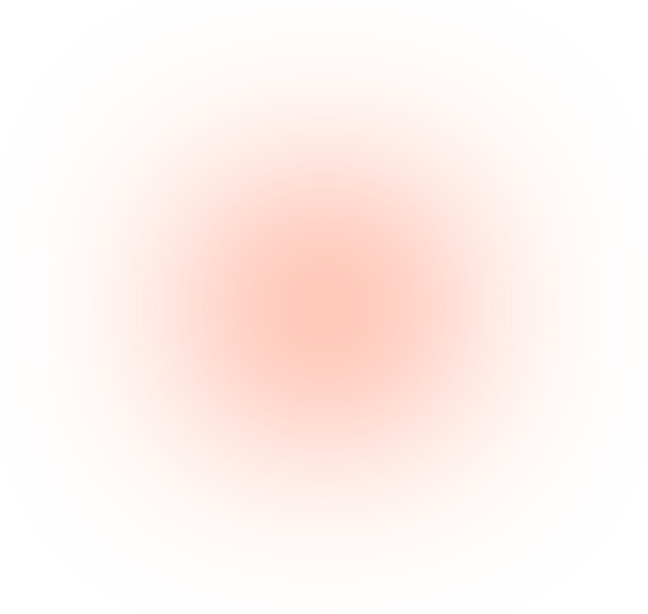
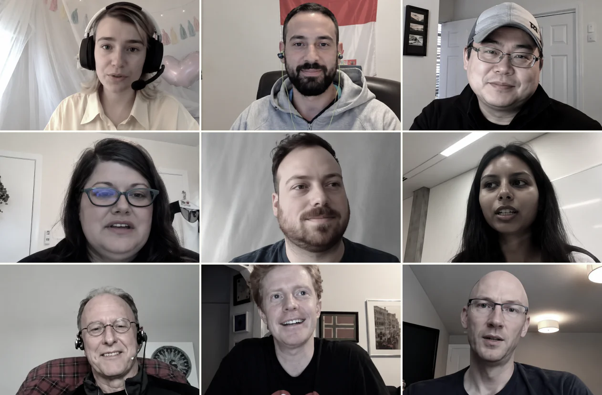
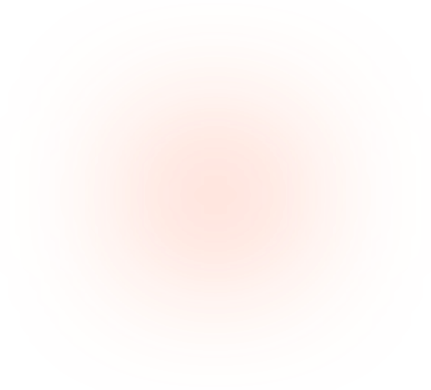
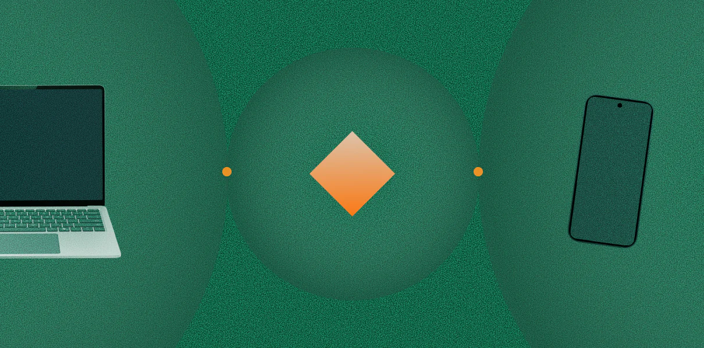
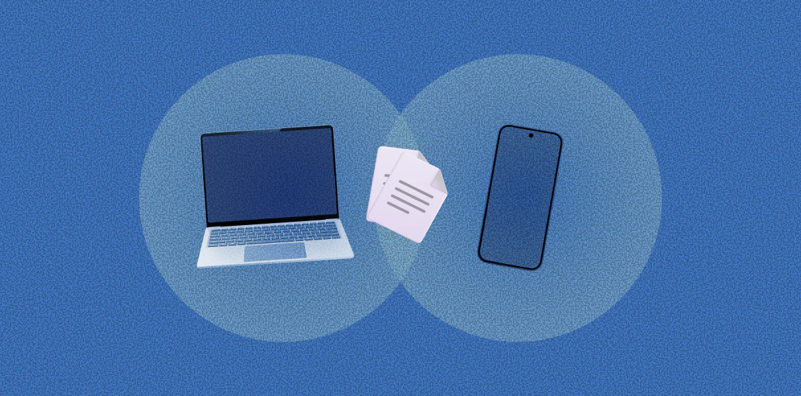

“The people I talk to aren’t here”
Contacts relied on email through Mail and People apps that many hadn’t set up. Searches often returned nothing, and selecting a contact opened a card instead of sharing.
CONTEXT
Share on Windows lets you send anything from your PC to anyone, including yourself, through the apps and devices you already use. With people, apps and devices in one place, sharing becomes a natural part of what you’re already doing.

What does it take to help me feel productive and connected, by letting me
share seamlessly with my people, across apps and devices, right from Windows?
USER RESEARCH

GAPS IN THE EXPERIENCE
Contacts relied on email through Mail and People apps that many hadn’t set up. Searches often returned nothing, and selecting a contact opened a card instead of sharing.

No option available to share it with myself, 60% said they share between PC and phone weekly

The apps didn’t fit what was being shared (OneNote and Feedback Hub for a photo). WhatsApp and Instagram weren’t available as share targets, despite 22% of users wanting to share through apps like WhatsApp.

Even if Nearby Share was on, device names were hard to recognize, and it only worked between PCs. 36% of people opening the sheet had Nearby on, but device clicks were just 1.26% (May 2022).

The current share falls short of the needs
20%
completion rate of sharing in Windows
41%
People left before they found a way to share
11%
of sheets opened with no apps
USER INSIGHTS

Why people switch? People switch from Windows to Apple for the full cross-device experience. It’s one of their top reasons.
What it means for Windows? Windows needs to invest in cross-device, cross-platform scenarios that support people across their Windows PC and their iOS or Android phone
Fast: Sharing should take as few steps as possible, to yourself or to others.
Secure: People want to trust that their content is safe.
Seamless: Content should move easily from device to device and from person to person.

About 60% of people share between their PC and phone every week, and almost every participant shared content with themselves
To get a file onto their phone, people email it to themselves, open the email on the phone and download it. Others send it to a friend or make a dummy group chat.
A redesigned Windows Share Sheet brings file previews, contact search, your devices, Nearby Share and third-party apps into one place.

On the share sheet, 70% of clicks came from the Share using Apps section, and 80% of People Suggestions clicks went to the Me-contact. The sheet’s layout didn’t reflect this. We ran a UX experiment to check whether each section earned its space and position, to bring popular share targets forward, and to measure the effect on task completion, frequency of use and retention.


SOLUTION


The redesigned share sheet helped people follow through on their intent to share, turning an experience where most attempts were abandoned into one where the majority were completed.
Completed sharing sessions grew 6.3x,
from 18 million to 112.9 million while completion rate tripled from 20% to 60%
FEATURES
NEXT STEPS
Every share starts with an intent, whether it’s to collaborate, share knowledge or express a feeling. Our next step is to explore how AI can help people prepare and adapt their content to suit that intent.